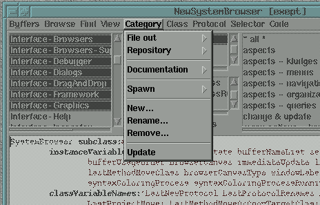
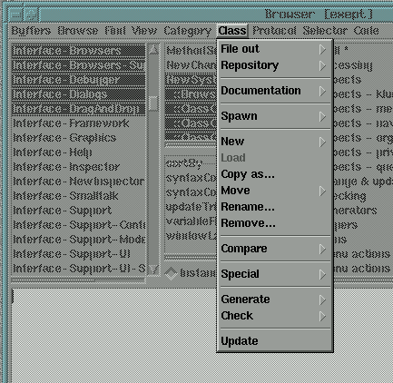
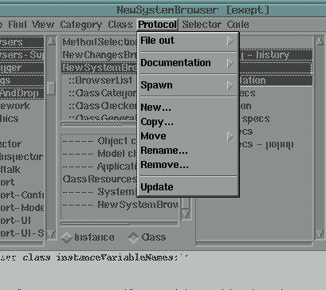

![[prev]](../../../icons/DocsLeftArrow.gif)
![[up]](../../../icons/DocsUpArrow.gif)
![[next]](../../../icons/DocsRightArrow.gif) Each of the views provides its own middle button popup menu;
in addition, the same menus are also shown in the browser's main menu panel.
Popup menus are activated by pressing the right or middle mouse button (the right button if you use a 2-button mouse).
The pullDown menus can be activated with any mouse button.
Each of the views provides its own middle button popup menu;
in addition, the same menus are also shown in the browser's main menu panel.
Popup menus are activated by pressing the right or middle mouse button (the right button if you use a 2-button mouse).
The pullDown menus can be activated with any mouse button.
Notice, that the new browser supports multiple selections - all menu operations
are applied to all selected items (i.e. be careful when moving, removing or renaming etc.).
However, all desctructive operations ask for a confirmation, and there is also an undo function,
which can recover most operations.

Class category lists menu (picture is out of time)
The class category list provides the following menu functions:
- FileOut - as
- save all classes in all selected
class categories into one big source file.
This function is useful to transport a bunch of classes to another Smalltalk system.
The file will be named "categoryName.st"
(if a single category is selected), or "someCategories.st" (if multiple categories are selected)
and contain the code such that it can be
reloaded later or moved to another system;
i.e. in Smalltalk fileOut format
(see the FileBrowser's
fileIn
function).
The format is supposed to be compatible
to Smalltalk-80's fileOut format.
However, keep in mind, that private classes cannot be loaded into other Smalltalk systems.
The file is created in the current project-directory;
by default, this is the current directory.
(see
projects ).
- FileOut - SIF as...
- like above, but save in SIF (Smalltalk Interchange Format) format,
which is a standardized version of the chunk format.
Notice, that this format is a pure interchange format
(in particular, this format cannot be compiled by the stc-compiler).
- FileOut - XML as...
- like above, but save in XML format.
Notice, that support for the XML format is experimental,
and, that this format is a pure interchange format
(i.e. this format cannot be compiled by the stc-compiler).
- FileOut - Each in...
- save all classes from all selected categories, but put each class into a
separate file, named
"className.st".
Having classes in separate source files is required if the
classes are to be compiled later by stc (for machine code),
or might be required for archival into some source repository.
- FileOut - Each Binary in...
- like fileOut each, but saves the classes in binary (BOSS - Binary Object Storage) format.
This format is portable across machines, iff no primitive code is contained
OR the target system supports dynamic compilation to machine code.
However, the BOSS format of Smalltalk/X is different from other vendors' Smalltalk systems
BOSS format - therefore, those class files cannot be loaded into non-Smalltalk/X systems.
- Repository - Checkin...
- Check every changed class in the current category INTO the
source code repository. Unchanged classes do not affect the repository.
Of course, you have to have the sourceCodeManagement facility running for this
to work.
- Repository - CheckOut Newest
- Load the newest version of each class in the current category FROM the
source code repository. This can be used to update the image from changed repository classes.
Of course, you have to have the sourceCodeManagement facility running for this
to work.
- Repository - CheckOut
- Load any repository version of each class in the current category FROM the
source code repository. For each class, a dialog asking for the version which should be loaded
is opened. This can be used to revert back to some older version of classes.
Of course, you have to have the sourceCodeManagement facility running for this
to work.
- Repository - History
- Displays a history of changes made to the repository (i.e. checkIn operations).
Of course, you have to have the sourceCodeManagement facility running for this
to work.
- Documentation - PrintOut
- sends a printed representation of all classes
in the selected category to the printer.
The printout may become long and includes each methods source code.
- Documentation - PrintOut Protocol
- sends a short protocol-only printed representation
of all classes in the selected category to the
printer. This printout will not include the methods
full source code - instead only the methods selector and the first comment
found in the method is printed.
This format is very valuable for
documentation purposes
(if your methods were written with a short descriptive comment at the beginning).
- Documentation - Save HTML
- saves html documentation for all classes of the selected category.
The output is similar to the 'javaDoc' appearance, and can be viewed with a standard html viewer
(netscape, explorer, opera) or the builtin Smalltalk/X html viewer.
- Spawn - Browser
- opens a class category browser on the selected class category.
This is a browser without the class category list.
In practice, this type of browser is seldom used.
- Spawn - Browser on Categories Matching...
- after asking for a matchPattern, opens a class category browser on all categories
matching the given string.
- Spawn - Buffer
- like above, but adds a buffer containing a class category browser (i.e. no separate window is opened).
- Spawn - Buffer on Categories Matching...
- like above, but the new browser is added as a new buffer.
- New
- allows creation of a new class category.
- Rename
- rename a category or a bunch of categories. This will change the class category
attribute of all classes in all selected
class categories.
- Remove
- remove all classes (& subclasses) in all selected class categories.
You will be warned by a popup box which has
to be answered positively, for the deletion to be actually performed.
- Update
- rescan all classes in the system and update the category list.
Normally, the systemBrowser tries to keep track of changes done by
other parts of the system; however, there are situations, in which the browser
does not get notified of these changes and needs a manual update
(if some program created a class without sending change notifications by using low-level
functions).
- Static Analyse
- opens the SmallLint tool to check all classes in the selected categories.
- Special - Load
- Load all autoloaded classes within the category.
- Special - Unload
- Unload all previously autoloaded classes within the category.
- Special - Remove from ChangeSet
- Remove all classes from the selected categories from the internal (in-memory) change set.
Use this to no longer mark those as changed in the browser,
after a manual filein or whenever you have undone code changes and the system could not
detect this automatically. Notice: after a checkin of a class into the source repository,
that class is removed automatically from the internal change list.

Class lists menu (picture is out of time)
Most functions in the class lists popupmenu affect the selected class.
It provides the following operations:
- FileOut - as
- save the selected classes source code
in a file named
"className.st".
The files are created in the current project directory.
- FileOut - XML as
- like above, but save in XML format.
Notice, that support for the XML format is experimental,
and, that this format is a pure interchange format
(i.e. this format cannot be compiled by the stc-compiler).
- FileOut - SIF as
- like above, but save in SIF (Smalltalk Interchange Format) format,
which is a standardized version of the chunk format.
Notice, that this format is a pure interchange format
(in particular, this format cannot be compiled by the stc-compiler).
- FileOut - Binary as
- like fileOut, but saves in binary (BOSS - Binary Object Storage) format.
This format is portable across machines, iff no primitive code is contained
OR the target system supports dynamic compilation to machine code.
However, the BOSS format of Smalltalk/X is different from other vendors' Smalltalk systems
BOSS format - therefore, those class files cannot be loaded into non-Smalltalk/X systems.
- Repository - Checkin
- Check every selected class INTO the
source code repository. Unchanged classes do not affect the repository.
Of course, you have to have the sourceCodeManagement facility running for this
to work.
- Repository - CheckOut Newest
- Load the newest version of each selected class FROM the
source code repository. This can be used to update the image from changed repository classes.
Of course, you have to have the sourceCodeManagement facility running for this
to work.
- Repository - CheckOut
- Load any repository version of each seleacted class FROM the
source code repository. For each class, a dialog asking for the version which should be loaded
is opened. This can be used to revert back to some older version of classes.
Of course, you have to have the sourceCodeManagement facility running for this
to work.
- Repository - Revision log
- Show a revision log of the selected class.
Of course, you have to have the sourceCodeManagement facility running for this
to work.
- Documentation - printOut
- send the selected classes source code to the printer.
- Documentation - printOut protocol
- send the selected classes protocol
description to the printer. This output will contain
the class description, class comment and the classes
protocol. For each method, the selector and the methods description
is printed in a format that is very valuable for documentation purposes
(if your methods were written with
a short descriptive comment at the beginning).
- Documentation - HTML
- generate HTML documentation, and show it in the document viewer (for preview).
- Documentation - save HTML as
- generate HTML documentation, and save it into a file. The file contains standard HTML, and can
be viewed with either the builtIn viewer, or any other HTML browser (i.e. netscape, exporer etc.)
- Documentation - Show Comment
- show the class comment.
Also when another class is selected, the comment is shown (instead of the definition).
Accept will store the modified comment into the class.
Notice, that by default, ST/X classes do not contain a comment - instead, the documentation
is found in a dummy #documentation method in the classes 'documentation' protocol (methodCategory).
This menu item is most useful when classes have been imported from ST80 / VisualWorks systems.
- Documentation - Show Hierarchy
- show the class hierarchy.
Also when another class is selected, the hierarchy is shown (instead of the definition).
- Documentation - Show Definition
- show the class definition - turns off the above two modes.
- Spawn - Buffer
- add a buffer which shows the selected classes only.
- Spawn - Buffer with subclasses
- add a buffer which shows the selected classes with all of their subclasses.
- Spawn - Buffer with superclasses
- add a buffer which shows the selected classes with all of their superclasses.
- Spawn - Buffer with references
- add a buffer which shows all methods which refer to any of the selected classes.
(i.e. which access to the corresponding global variable)
- Spawn - Browser
- open a new browser which shows the selected classes only.
- Spawn - Browser with subclasses
- open a new browser which shows the selected classes with all of their subclasses.
- Spawn - Browser with superclasses
- open a new browser which shows the selected classes with all of their superclasses.
- Spawn - Browser with references
- open a new browser which shows all methods which refer to any of the selected classes.
(i.e. which access to the corresponding global variable)
- New - Class
- shows a new class definition prototype in the code view.
You should edit this template, by changing the classes
name and filling in the instanceVariables and/or classVariable names.
accepting in the code view will actually create the
new class.
- New - Subclass
- same as new class, but the offered class definition
will be for a subclass of the selected class.
- New - Private class
- same as new class, but the offered class definition
will be for a private class. Private classes are only visible inside their
owning class and are most useful for data-holding classes (i.e. local data types).
- New - Application
- same as new class, but the offered class definition
will be for an application (i.e. the superclass is ApplicationModel).
In addition to creating the class, the browser offers to create the minimum required methods for
the application (when accepting);
this includes a window-specification, mainMenu definition, useful hooks and initial documentation templates.
- New - Dialog
- same as new class, but the offered class definition
will be for a dialog (i.e. the superclass is SimpleDialog).
- New - Exception
- same as new class, but the offered class definition
will be for an exception (i.e. the superclass is Exception).
- New - Error
- same as new class, but the offered class definition
will be for an error (i.e. the superclass is Error).
- New - TestCase
- same as new class, but the offered class definition
will be for a testCase (i.e. the superclass is TestCase).
- Move - to Category
- moves the selected class(es) to some other class category.
- Move - to NameSpace
- moves the selected class(es) into some other nameSpace.
- Move - to Project
- marks the selected class(es) as belonging to some other project (i.e. package).
- Move - Make Private
- makes the selected class(es) private to some other classes (visible only in the owning class).
- Move - Make Public
- marks the selected class(es) public (visible everywhere).
- Rename
- change the name of the selected class.
Since this class may be referenced by other code in the
system, all references to that class are searched for
and shown in another browser - you should then decide
if those references should be changed or not
(edit those references and accept in this new
browsers code view).
- Safe Remove
- remove the selected class(es) and push all of its subclasses up, to become subclasses
of the deleted classes superclass.
You will get a chance to cancel, if you changed your mind.
- Remove
- remove the selected class(es) and all of its subclasses.
You will get a chance to cancel, if you changed your mind.
- Compare - with Repository
- Compare the class with any revision in the source code repository.
You have to have the sourceCodeManagement facility running for this to work (disabled otherwise).
- Compare - with Class
- Compare the classes code against some other classes code.
- Generate - Access Method(s)
- creates methods to read and write instance variables. This menu item is only shown when the
instance protocol is visible (turn on the ``instance'' toggle).
For each selected instance variable foo, both a #foogetter-,
and a #foo:setter-method are created.
This function is non-destructive: if any method by that
name already exists, it is not overwritten or changed.
If no variable is selected, accessors are generated for all variables (if no such method already exists).
- Generate - Getter Method(s)
- creates methods to read instance variables. This menu item is only shown when the
instance protocol is visible (turn on the ``instance'' toggle).
For each instance variable foo, a #foo
getter-method is created, which returns that variable.
This function is non-destructive: if any method by that
name already exists, it is not overwritten or changed.
If no variable is selected, getters are generated for all variables (if no such method already exists).
- Generate - Setter Method(s)
- creates methods to write instance variables. This menu item is only shown when the
instance protocol is visible (turn on the ``instance'' toggle).
For each instance variable foo, a #foo:
setter-method is created, which writes that variable.
This function is non-destructive: if any method by that
name already exists, it is not overwritten or changed.
If no variable is selected, setters are generated for all variables (if no such method already exists).
- Generate - Multi-Setter Method
- creates a method to write multiple instance variables. This menu item is only shown when the
instance protocol is visible (turn on the ``instance'' toggle).
A single method is created, which writes all the selected instance variables.
I.e. if two variables foo and bar, were selected,
a #foo:bar:
method is created, which expects 2 arguments, and sets those two variables.
This is especially useful to generate (private) acceessors for initialization.
The name of the generated method consists of the concatenated instance variable names,
in the inheritance order.
(i.e. top to bottom as shown in the browser's variable list)
This function is non-destructive: if any method by that
name already exists, it is not overwritten or changed.
- Generate - Access Methods with Change Notification
- same as above, but generates a set-method which sends out a change notification.
This function is non-destructive: if any method by that
name already exists, it is not overwritten or changed.
- Generate - Access Methods for ValueHolder
- generates a getter/setter-methods to access a valueHolder in a an instance variable
This function is non-destructive: if any method by that
name already exists, it is not overwritten or changed.
- Generate - Access Methods for ValueHolder with Change Notification
- same as above, but generates code to set up a valueholder with change notification.
This function is non-destructive: if any method by that
name already exists, it is not overwritten or changed.
- Generate - Update Template
- generates an empty update-method (to catch change notifications)
This function is non-destructive: if any method by that
name already exists, it is not overwritten or changed.
- Generate - Visitor Method
- generates a visit method (part of visitor-patterns double dispatch mechanism)
This function is especially useful if multiple classes are selected.
This function is non-destructive: if any method by that
name already exists, it is not overwritten or changed.
- Generate - Visitor and Visited Methods
- after asking for a visitor class, this generates both a visit method and a visitor method
(visitor-patterns double dispatch mechanism)
This function is especially useful if multiple classes are selected.
This function is non-destructive: if any method by that
name already exists, it is not overwritten or changed.
- Generate - Documentation Stubs
- creates empty documentation methods in the classes documentation protocol.
This menu item is only shown when the class protocol is visible (turn on the ``class'' toggle).
This function is non-destructive: if any method by that
name already exists, it is not overwritten or changed.
We highly recommend you to always add documentation methods
- you yourself and others will appreciate this later ;-)
- Generate - Application Code
- creates the set of minimal required code for applciations and dialogs.
The generated code includes UI-specification, menu specs, dummy action-methods, startup/release methods
and initial documentation stubs.
Use the UI-tools to add real functionality and more UI components to it.
This function is non-destructive: if any method by that
name already exists, it is not overwritten or changed.
- Generate - Required Protocol
- creates emty stub methods for all those methods, which have een declared as responsible by subclass in a superclass
(i.e. for all selectors, for which an inherited method raises a
subclassResponsibility error).
This function is non-destructive: if any method by that
name already exists, it is not overwritten or changed.
- Inspect - Class
- Launch an inspector on the class object (to look at class instance variables or other internals)
This can be also done by typing in the name of the class and inspecting it;
however, most of us are lazy ...
- Inspect - Instances
- Launch an inspector on the collection of all instances.
Sometimes useful when debugging ...
- Inspect - Derived Instances
- Launch an inspector on all instances of the class and all instances of subclasses.
Sometimes useful when debugging ...
- Load - Load an Autoloaded Class
- For each seleted class, if that class is an autoload class stub (on/demand loaded class),
the class is forced into memory (autoloaded).
- Unload - Unload an Autoloaded Class
- For each seleted class, if that class was originally autoloaded,
the class is removed, and an autoload stub class is reinstalled.
- Cleanup ChangeSet
- All entries for the selected class(es) are removed from the ChangeSet.
Thos only affects the (in-memory) ChangeSet - the external ChangeFile is not affected by this operation.
Notice: the changeSet is automatically cleaned up, whenever a class is checked into the source code repository.
- Check - Code Checker SubMenu
- allows for a bunch of bug, error and style checks to be performed on the set of selected classes.
- Update
- rescan all classes in the system and update the class list.
Normally, the systemBrowser tries to keep track of changes done by
other parts of the system; however, there are situations, in which the browser
does not get notified of these changes and needs a manual update
(if some program created a class without sending change notifications by using low-level
functions).

Method category list menu (picture is out of time)
The method category list provides the following menu functions:
- FileOut - as
- save the selected method categories source
code into a file named
"className-category.st".
By default, the file is created in the current project directory.
Not very useful - except to transfer parts of a class to others.
- Documentation - printOut
- print all methods of the selected category.
- Documentation - printOut protocol
- print only the methods specification (selector plus args) and the method comment.
- Spawn
- start a method category browser on all methods in the selected category (try and see).
- Spawn category
- start a browser on all methods (i.e. of all classes)
which have the same method category as the
selected one (try and see).
- Find method here
- allows searching for the method implementing a selector.
The selector has to be entered into a box - wildcards
are allowed.
No action is performed, if there is no method
implementing that selector.
- Find method
- same, but searches up in the class hierarchy for the
first class implementing the selector. This answers the
question "when I send #foo to instances of this class,
which method gets evaluated ?"
No action is performed, if there is no method
implementing that selector.
- New Category
- addes a new category to the list. For this new category
to become persistent, at least one method must exist
with this category attribute.
- Copy Category
- allows copying all methods within another classes category to
the selected class. You can specify wildcards
in the category name.
For example, entering
"*" as category, will copy all methods from
the other class. This function is very useful if you want to clone a class
(for example, to experiment with a modified system class).
- Rename
- rename the method category
- Remove
- remove all methods (in the selected class only)
which are members of the selected method category.
You will be asked to confirm before the remove is actually performed.
![[Fig: method menu hardcopy]](../../../pictures/NewSystemBrowserMenuMethod.gif)
Method lists menu (picture is out of time)
The method list offers a selector/text filter (not shown in the above image) and the following menu functions:
The debug submenu can also be opened quickly,
if the "Control"-key is pressed simultaneously with the right-mouse-button click
(in the method list view).
- FileOut
- save the selected method(s) into a file named
"className-selector.st".
The file is created in the current project directory.
Not very useful - except to transfer individual methods to others.
- PrintOut
- send a printed representation of the selected method(s) to the printer.
- Spawn
- add a buffer or open another browser for editing the selected method(s).
This is seldom used;
however, if a string of the form "classname » selector"
is currently selected in the codeview,
a browser is opened on that method instead.
Many method comments contain this kind of cross-reference in a comment
to allow quick excursions to related parts of the system.
- Inheritance
- adds another buffor showing the methods which are redefined by the selected method(s).
(i.e. the implementations found in superclasses)
- Implementors
- starts a new browser on all methods implementing a specific message.
The message selector must be entered in a box;
however, the box offers a reasonable default,
which is the current methods selector or the selection in the code view, or the last search string.
If the codeViews text-selection consists of a selector or even a partial code fragment,
the browser tries to extract the selector (try & see).
You may also enter a string containing a search pattern.
(Try it with the pattern: "*[pP]ut*".)
This is highly useful, if you only remember a part of a selector.
The menu provides two implementor-search items:
the first allows for any selector pattern to be searched for, and in addition offers
a chance to limit the search to a part of the system (class hierarchy, namespace etc).
The second extracts the messages sent by the selected method, and offers those
for a quick search - however, this search always walks over the whole system.
- Follow Implementation
- Similar to the implementos menu, but this lists only
locally sent messages to the receiver (i.e. self- and super sends),
and will not open another browser window or tab, but instead
navigate directly to the selected method.
This is specially useful when browsing simple delegating methods,
which consist of only another send.
- Senders
- starts a new browser on all methods sending a specific message.
The same selection and search mechanism as in "implementors" is used.
The menu provides two sender-search items:
the first allows for any selector pattern to be searched for, and in addition offers
a chance to limit the search to a part of the system (class hierarchy, namespace etc).
The second extracts the messages sent by the selected method, and offers those
for a quick search - however, this search always walks over the whole system.
Be aware, that this search cannot find all possible invocations of the method -
especially think about computed selectors, which are sent via #perform:.
- Sender chain
- adds a senderChain browser on the selected method(s).
This is a multipane selector list browser, which supports tracking pathes which lead to
invocation of a method (try and see).
- String search
- starts a new browser on all methods where some sub-string is found in the source.
Since all methods' sourcecode has to be processed (and possibly be loaded from a file or
retrieved from the source code repository),
this may take a while, if the number of consulted classes is big.
Therefore, the default search area here is the current class only.
- Code search
- starts a new browser on all methods where some code pattern is found in the source.
This uses a Smalltalk-Syntax-aware code pattern search, which knows about the
meaning of the code entities (for example, you can search for a particular variable
name or message pattern or even a complete expression consisting of multiple constant
or placeholder parts).
Details on the match patterns are found in the code pattern help page.
- New - method
- shows a method template in the code view.
You should edit this template and accept in the code view.
Actually, this template is simply a reminder on method syntax.
To create a method,
it is sufficient to accept in the code view with any method category
selected. (i.e. just edit and accept)
Typically new methods are created by copying some existing
code into an empty codeview,
then the selector and code are modified as needed,
and finally accepted.
- Copy
- copies the selected method(s) to some other class.
The class is to be entered into an entryBox.
- Move - to Protocol
- moves the selected method(s) to some other protocol (method category).
- Move - to Class
- moves the selected method(s) to some other class.
The class is to be entered into an entryBox.
For example, this is very useful, to move some method to a superclass or a subclass.
- Move - to Class with Forwarding
- moves the selected method(s) to another class and creates a forwarding method which replaces the selected method.
The class is to be entered into an entryBox; it must be a metaclass (i.e. the new implementation
must be on the class-side).
For example, this is very useful, to move some method to a common utility class
(very useful for shared image- or menu-spec methods).
- Move - to Project
- marks the selected method(s) as belonging to some other project (i.e. package).
- Move - to Instance Side
- moves the selected method(s) from the class- to the instance protocol.
- Move - to Class Side
- moves the selected method(s) from the instance- to the class protocol.
- Save Remove
- checks if any of the selected methods is possibly invoked via a direct send
or if its selector is found as symbol somewhere.
If found, offers a chance to cancel the operation or browse the references.
If not found, same as the remove operation.
Be aware, that this search cannot find all possible invocations of the method -
especially think about computed selectors, which are sent via #perform:.
- Remove
- removes the selected method(s) (with confirmation).
- Rename
- renames the selected method(s). Also, searches for all senders
and changes the calls as appropriate.
In addition, allows for the order of arguments to be changed (caring for senders, of course).
- Compare - with previous version
- Compare the methods source against the previously accepted version.
- Compare - with inherited
- Compare the methods source against the inherited methods source (if any).
- Compare - with each other
- Compare the two selected methods sources against each other (two methods must be selected).
- Special - inspect method
- Launch an inspector on the selected method.
This is probably only useful for ST/X developers to debug internals.
- Special - edit resource
- open a resource editor (UIPainter, MenuEditor or imageEditor) on the selected resource method.
(same as double-clicking on the method).
- Special - stc compile to machine code
- Call the stc compiler to generate an optimized machine code
version of this method. Notice, that this is NOT related to just-in-time compilation,
which is done automatically. Instead, this calls for the stc compiler,
to generate a machine code file and loads the resulting module into the system.
Stc generated code typically runs faster than just-in-time compiled
or interpreted code.
This menu function is only available on systems which allow for machine code
to be dynamically loaded (and non-demo versions, where the stc compiler
is part of the delivery).
- Special - decompile
- Show the bytecode of the method as a symbolic ``disassembly''.
Notice, that stc-compiled methods do not contain byteCode (but machine code instead),
and cannot be decompiled.
This is probably only useful for ST/X developers to debug internals.
- Debug - remove break/trace
- remove any breakPoint, tracePoint or instrumentation of the selected method(s).
Notice: Any trace- or breakpoint is also removed,
whenever the method is recompiled (i.e. accepted).
- Debug - breakpoint
- sets a breakpoint on the selected method.
The debugger will be entered, whenever a breakpointed method is about to be executed.
A single step or continue will then actually start execution of the method.
- Debug - breakpoint in
- sets a breakpoint on the selected method, which is only triggered, if that
method is invoked by a particular process. A popup box opens up to allow for the
process to be selected.
Use this, if you want a breakpoint to be placed upon a method which is also
used by the system or other processes, and others should not be affected by
breakpoints. For example, if some View method is to be breakpointed.
- Debug - breakpoint after
- sets a breakpoint on the selected method, which is only triggered, if that
method has been called for some number of times.
A popup box opens up to allow that number to be entered.
Use this, if you want a breakpoint to trigger after a certain number of calls.
- Debug - breakpoint if
- sets a breakpoint on the selected method, which is only triggered, if a checkBlock
returns true.
A popup box opens up to allow that checkBlock to be entered.
Use this, if you want a breakpoint to trigger in special situations, for example
if the argument given to the method has some particular value, or if it was called
by some particular sender.
- Debug - trace
- turns on tracing of the selected method.
Traced methods will output some information on the standard-error
(Stderr) both on entry and exit.
To trace into a file, Stderr can be set to some fileStream opened for writing.
- Debug - trace sender
- turns on sender-tracing of the selected method.
Like trace,
but only a short note identifying the sender of
the method will be written to Stderr.
- Debug - trace full walkback
- Like trace, but dumps a full walkback to Stderr.
- Debug - start timing
- install/deinstall a statistic wrapper, which monitors the execution
time of the method.
The min/max and average times are shown in the browser - but that display is only
updated, if you click on the item again (to avoid flicker ...).
- Debug - start counting
- install/deinstall a counter to be incremented whenever the method is invoked.
The current count is shown in the browser - but that display is only
updated, if you click on the item again (to avoid flicker ...).
- Debug - start memory usage statistics
- instal/deinstall a memory usage statistic on the selected method
The amount of memory allocated by the method and all methods called by it
will be displayed in the browser. No automatic update is performed - click on the
methods item again, to get an update.
If any pattern is entered into the filter, only methods whose selector matches
the given pattern (if filtering selectors) or only methods which contain
the given text (if filtering text) are presented in the list.
Next: More Menu Functions
![[stx logo]](../../../icons/stx.gif) Copyright © 2000 eXept Software AG, all rights reserved
Copyright © 2000 eXept Software AG, all rights reserved
<info@exept.de>
Doc $Revision: 1.35 $ $Date: 2017-11-25 12:05:58 $